Chapter 10. Marvin the Headless Mummy - Part 2 of 2
Marvin grabbed a off the wall with the hand he wasn't using to hold his own head. Then he and Mr. Klutz started fighting, just like in the movies. It was cool.
"Get him, Mr. Klutz!" we all shouted. "Kill the Halloween Monster!"Mr. Klutz and Marvin were dancing around, swinging their swords at each other.
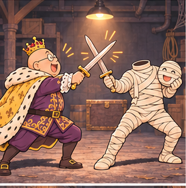
"Off with your head!" Mr. Klutz said, taking a wild swing."His head is already off!" somebody yelled."Oh," Mr. Klutz said.
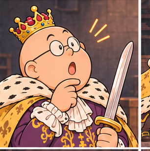
"Let him eat cake!"The fight was really exciting. Finally, after a million hundred minutes, Mr. Klutz knocked the out of the Halloween Monster's hand.
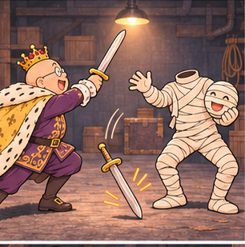
"Please have ," Marvin said as he ."!" Mr. Klutz said. "Don't ever steal candy from the children of Ella Mentry School again!"
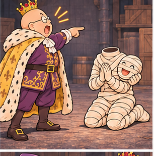
"I'll get you, my pretty," said the Halloween Monster as it ran up the stairs, "and your little dog, too.""I don't even have a dog," said Mr. Klutz.After the Halloween Monster ran away, Mrs. Patty came downstairs.
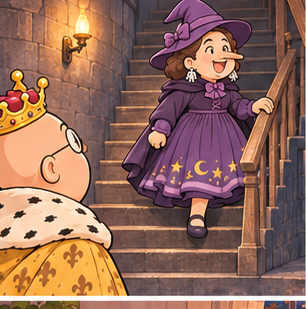
"Hooray for Mr. Klutz!" she yelled. We all started cheering."I have the Halloween Monster!" said Mr. Klutz . . . I mean, Louis the Fourteenth.
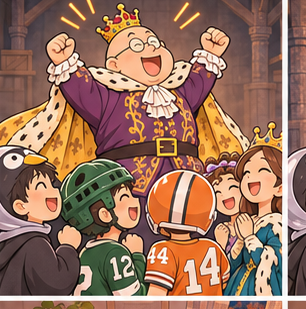
"We should !" said Mrs. Patty. "Let's have a candy party!""Yeah!" we all yelled.
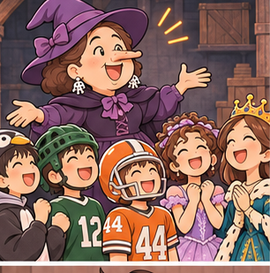
Mr. Klutz and Mrs. Patty the chest and all the candy on the floor. We were allowed to eat whatever we wanted and take the rest home. I ate so much candy, I thought I was going to .
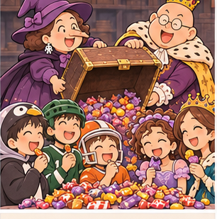
It was the greatest night of my life. After eating all that candy, I couldn't for a million hundred hours. I just lay there in bed thinking about all the cool stuff that happened.
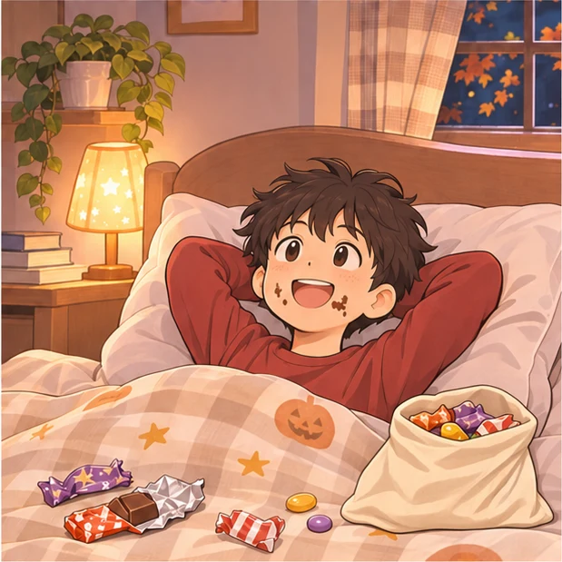
Maybe Mrs. Patty does keep her Halloween up all year round. Maybe her husband, Marvin, really is dead. Maybe she did chop his head off and turn him into a .
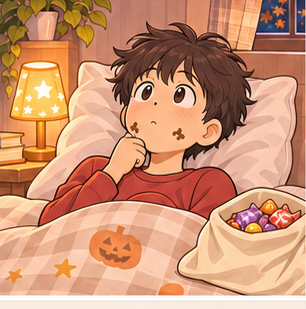
Maybe that's why he's so mad and he has to run around the house holding his own head. Maybe now that he lost the fight to Mr. Klutz, he'll be nicer and stop taking kids' candy. Maybe Marvin and Mrs. Patty will get back together and just be normal people again, even though one of them is dead.
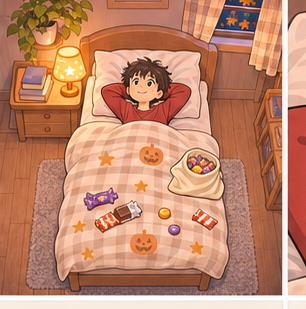
And maybe Mrs. Patty will be able to get that off her nose.But it won't be easy!
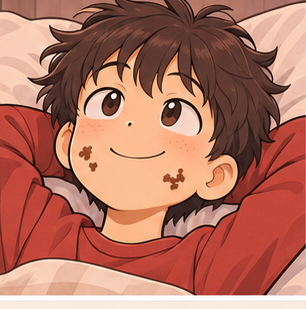